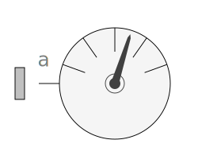
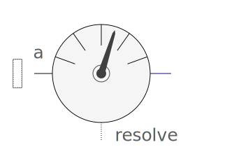
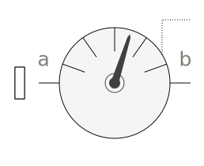
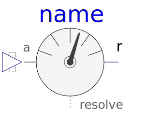
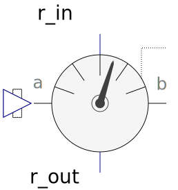
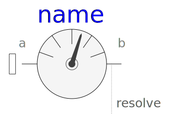
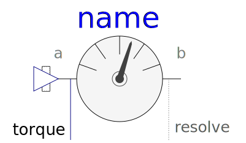

Package with classes that are used within package Sensors. The classes in this package should not be directly used by a user.
| Name | Description |
|---|---|
|  PartialAbsoluteSensor | Base class for absolute sensor models |
|  PartialAbsoluteBaseSensor | Base class for absolute sensor models defined by equations (frame_resolve must be connected exactly once) |
|  PartialRelativeSensor | Base class for relative sensor models |
|
|
Base class for relative sensor models defined by equations (frame_resolve must be connected exactly once) |
|  BasicAbsolutePosition | Basic sensor to measure absolute position vector |
|
|
Basic sensor to measure absolute angular velocity |
|
|
Basic sensor to measure relative position vector |
|
|
Basic sensor to measure relative angular velocity |
|
|
Transform absolute vector into another frame |
|  BasicTransformRelativeVector | Transform relative vector into another frame |
|
|
Set force and torque to zero |
|
|
Base class to measure cut force and/or torque between two frames, defined by components |
|  PartialCutForceBaseSensor | Base class to measure cut force and/or torque between two frames, defined by equations (frame_resolve must be connected exactly once) |
| Basic sensor to measure cut force vector (frame_resolve must be connected) | |
|  BasicCutTorque | Basic sensor to measure cut torque vector (frame_resolve must be connected) |